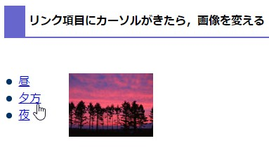
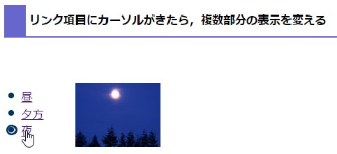
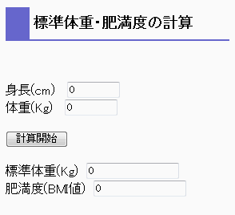

JavaScriptとは
JavaScriptは、インタラクティブなWebページを制作するための技術のひとつです。ページに動きをもたせたり、ユーザ(ページの読者)からの入力(マウスの操作やキー入力)に対し、Webページに何らかの応答をさせるのに使います。
JavaScriptはNetscape社が開発したスクリプト言語です。HTMLドキュメント(Webページ)に埋め込まれ、ブラウザがそのページを表示する際に、ブラウザ内のJavaScriptを解釈実行する部分が、スクリプトの記述を解釈実行します。
Ｃ言語やJava言語といったプログラミング言語は、プログラムを書いた後、そのソースコードにコンパイルという処理を行うことで、プログラムを実行します。一方、Perl言語はコンパイルを必要とせず、その言語を解釈して実行するプログラム(これをインタプリタと呼びます)がソースコードを解釈して実行します。
JavaScriptの場合、ブラウザに組み込まれたJavaScriptのインタプリタがHTMLドキュメント中のJavaScriptの記述を解釈実行します。ただ、JavaScriptで記述された"プログラム"が独立して実行されることはなく、あくまでWebページの一要素として実行されます。この意味で、JavaScriptはプログラミング言語ではなく、スクリプト言語と呼ばれます。
ブラウザ開発競争の中で、異なったJavaScriptの機能が実装されたため、共通の言語規約はないと言ってもいい状態にありました。言語規約が標準化され、それに準拠したブラウザが多くなっているとはいえ、バージョンやコンピュータの環境などで、サポートされている機能や動作に違いがありますので、注意が必要です。
<script>タグ
JavaScriptは<script>タグを使って記述します。
JavaScriptの実行結果が何らかの出力をするものであれば、HTMLドキュメントの<script>タグ
を記述したところにその結果が埋め込まれます。
<script>
<!--
JavaScriptの記述
//-->
</script>
あるまとまった働きをする一連の処理に名前をつけたプログラムの部品をfunction(関数)といいます。このように名前をつけておくと、必要に応じてその名前を記述して処理を実行させることができるので、便利です。関数は<head>タグの中に定義しておくのが、一般的なやり方です。
<head>
<script>
<!--
function 関数名(引数のならび){
関数の処理
}
//-->
</script>
</head>
JavaScriptの記述を別のファイルに保存しておき、それをHTMLドキュメントからよびだすには、<script>タグにsrc属性を指定します
<script src="xxx.js"> </script>
はじめの例
Webページに静的な情報(文字)を表示するJavaScriptの記述を例に、JavaScriptの書き方を説明します。
サンプル
- 特定の文字列の表示
指定した文字列を表示するだけの例。
documentオブジェクトのメソッドを使う。
<script>
<!--
document.write("この文字はJavaScriptで表示しています。");
↑ domumentオブジェクトのwriteメソッドを実行
↑ 引数に指定された文字列がページに出力される
//-->
</script>
- 現在時刻を表示
表示する文字列を、計算で生成する例。
<script>
<!--
change = new Date(); ← Dateオブジェクトを生成、変数changeに格納
y = change.getFullYear();
↑ DateオブジェクトのgetFullYearメソッドを実行、4桁の数字を変数yに入れる
m = change.getMonth()+1;
↑ DateオブジェクトのgetMonthメソッドを実行、戻り値に1加えて、変数mに入れる
d = change.getDate();
↑ DateオブジェクトのgetDateメソッドを実行、戻り値(日)を変数dに入れる
h = change.getHours();
↑ DateオブジェクトのgetHoursメソッドを実行、戻り値(時間)を変数hに入れる
min =change.getMinutes();
↑ DateオブジェクトのgetMinutesメソッドを実行、戻り値(分)を変数minに入れる
document.write(y、"年"、m、"月"、d、"日 "、h、"時"、min、"分","<br>");
↑ domumentオブジェクトのwriteメソッドを実行
↑ 引数に指定された文字列がページに出力される
//-->
</script>
- 画像のソースをJavaScriptで指定
<img >タグで配置した画像は、documentオブジェクトのimages[]プロパティに格納されます。
imagesプロパティは配列で、<img >タグが現れた順に画像情報が入ります。[ ]の中には出現順を表すインデックス(整数)を指定します。最初の<img >タグはdocument.images[0]で、そのsrcの値に画像ファイル名を指定します。
単に画像を表示するだけなら、わざわざJavaScriptで指定する必要はありませんが、
インタラクティブに画像を変化させたいときには、JavaScriptを使ってsrcの値を切り替えます。
<img>
<script>
<!--
document.images[0].src="image/mori.jpg";
↑ domumentオブジェクトのimages[]プロパティには、img要素が自動的に入る
↑ そのsrcの値に表示したい画像ファイルを指定する
//-->
</script>
<img >タグで配置した画像に、name属性で名前をつけ、その名前のsrcの値を指定することもできます。<img >タグにname属性をつけることはHTML5では推奨されていませんが、機能します。以後のサンプルでは、この方法を使っているものもあります。
<img name="photo">
<script>
<!--
document.photo.src="image/mori.jpg";
↑ domumentオブジェクトにはname属性を指定した要素のプロパティが自動的に生成される
//-->
</script>
JavaScriptはその名前の一部にJavaとついていることからも想像されるとおり、オブジェクト指向であるJava言語の考え方や記述法を借りています。一方で、手続き型言語(FORTRANやC)のやり方も取り入れていていますので、「純粋な」オブジェクト指向ではありません。
はじめの例に出てくるJavaScriptの文法要素を理解する助けになる資料を用意しました。
関連資料
- オブジェクト指向
- documentオブジェクト
- 変数と定数
- 演算子
- Dateオブジェクト(http://www.tohoho-web.com/js/date.htm)
- Mathオブジェクト
演習問題
- 今日の日付の、月の数字と日の数字を
- 足し算した値(演算子＋)
- 引き算した値(演算子－)
- 掛け算した値(演算子＊)
- 割算した値(演算子／)
- 割った余りの値(演算子％)
を表示するページを作成してください。
- 今日から特定日までの日数を表示するページを作成してください。
- 特定の日を指定してDateオブジェクトを生成します。
target = new Date(yyyy,mm,dd);
- DateオブジェクトのgetTimeメソッドを使って、1970年1月1日からの経過時間(ミリ秒単位)を求め、特定の日と今日との間の時間差を計算します。
target.getTime()
- ミリ秒単位の時間差を1日のミリ秒(24*60*60*1000)で割り、日単位に直します。その整数部分が特定日までの日数です。
イベント
マウスカーソルが移動した、マウスボタンが押された、オブジェクト状態が変化したときなどに、イベントが起ります。起ったイベントに対して、どう処理をするかを記述しておけば、インタラクティブな動きをするページを作ることができます。
どのようなイベントがあるかは関連資料を参考にしてください。
サンプル
- onmouseover/outの例１
マウスカーソルが画像の上にきたとき、画像が変化します。documentオブジェクトのimagesプロパティを使っています。最初のimg要素はdocument.images[0]です。
- onmouseover/outの例２(関数を使う)
例１と全く同じ動きをします。引数に画像ファイルを指定する関数を定義しています。関数内で、document.images[0]のsrcを引数で渡された画像に設定します。
- onmouseoverの例３(関数を使う)
例１例２と全く同じ動きをします。
例２では関数の引数にファイル名を指定しましたが、この例では、画像ファイルごとに関数を用意し、先頭から何番目のimgタグかを表す値を引数に指定にしました。
- onmouseover/outの例４
マウスカーソルが画像の上にきたとき、画像が変化します。画像の部分にname属性で名前をつけておく代わりに、documentオブジェクトのimagesプロパティを使っています。
- onmouseover/outの例５(関数を使う)
例４と同じ動きをします。関数を使って、書きなおしたものです。
- onclickの例１
フォーム上に入力した値を使って計算をします(華氏と摂氏の換算)。
- onclickの例２
2枚の画像がクリックで入れ替わります。onmouseover/outの例５と同じ動きがマウスのクリックで起こるように書き換えました。
- onclickの例３
onclickの例２と同様クリックで画像が変化します。画像の枚数を増やし、クリックにより、ぱらぱらアニメにように画像が順番に表示します。
- onchangeの例
メニューで文字の色を選択します。
関連資料
- イベントの種類
- ビルトイン関数
- formタグとJavaScript
- formオブジェクト(http://www.tohoho-web.com/js/form.htm)
- Stringオブジェクト
演習問題
演習問題で使う画像
- onmouseoverの例を参考に、
写真の近くに置いた文字列の上にマウスカーソルがくると、
画像が変わるページを作成してください。
- 
マウスカーソルがメニュー項目上にくると、
それに応じた画像を右側に表示するスクリプトを作成してください。
例えば、昼、夕方、夜という３つのメニュー項目があり、
そのいずれかにマウスカーソルを置くと、関連する写真を右に表示します。カーソルがメニュー項目上にない時は何も表示されません(空白の画像を表示)。
メニュー項目が表示されているページを用意しました。
メニュー項目の表示例
- 
演習問題２のページに対して、マウスカーソルがメニュー項目上にくると
メニュー文字列の前の記号画像が変わるよう、変更を加えてください。
メニュー文字列の前の画像は元々off.gifですが、文字列にマウスカーソルが乗ったらon.gifに変更し、カーソルが外れたら元に戻るようにします。
つまり、項目のいずれかにマウスを置くと、項目前の画像が変わるとともに、
関連する写真を表示するようにします。
- 
onlcickの例を参考に,体重と身長をフォームから入力すると、標準体重と肥満度を計算し、表示するページを作成してください。標準体重と肥満度(BMI値)は次の式で計算します。
標準体重(Kg) = 身長(m) × 身長(m) × 22
肥満度 = 体重(Kg) ÷ (身長(m) × 身長(m))
- onchangeの例を参考に、文字の背景色がメニューで選択した色に変わるようにしてください。
制御構造
条件によって処理の内容を変えたり、同じ処理を繰り返したりすることを、処理を制御するといいます。これを記述するのが制御構造です。
サンプル
- 時間による画像の変化(条件分岐if)
ローカルマシンの時間により、表示される画像が変わります。
if文を使って、現在の時間により、画像のソースを変えます。
- ブラウザ種類の判別(条件分岐if)
ブラウザの種類やバージョンに関する情報は、Navigatorオブジェクトの
- appNameプロパティ
- appVersionプロパティ
- userAgentプロパティ
によって知ることができます。
この例を異なるブラウザで表示して試すとわかるように、appNameプロパティだけを見てブラウザの名前を知ることはできません。またappVersionやuserAgentは長い文字列でその中に、ブラウザ名やバージョン埋め込まれているため、そこからブラウザ名の文字列を探し出すという処理が必要になります。
たとえば、次のようにします。userAgentプロパティの文字列を一旦全部小文字にして(toLowerCase()を使う)、その後で、'opera'や'msie'といったブラウザ名の文字列があるか調べます(indexOf('opera')のようにして調べる)。
文字列が見つかると、その文字列が見つかった場所(先頭からの何文字目か)が返されます。見つからないと－1となります。indexOf()の返す値がー１でなかったならば、その文字列が見つかった、つまりその文字列のブラウザであることが、判明します。
agent = window.navigator.userAgent.toLowerCase();
if(agent.indexOf('opera') != -1){
str = 'opera';
}else if(agent.indexOf('msie') != -1) {
str = 'ie';
}else if(agent.indexOf('chrome') != -1){
str = 'chrome';
}else if (agent.indexOf('safari') != -1){
str = 'safari';
}else if (agent.indexOf('firefox') != -1){
str = 'firefox';
}else {
str = "不明";
}
document.write("ブラウザは"、str、"ですね。
- １からある数までの合計(繰り返しfor)
ブラウザ上で整数の入力を求め、１からその数までの合計を計算するページです。
for文を使って、１からその数まで足し算を繰り返します。
- 性格動物診断(フォームと制御構造)
行動に関する質問にラジオボタンで回答すると、それに応じた性格判断をします。
formのradioボタン、条件分岐、繰り返しを使っています。
関連資料
- 制御構造を記述する文
演習問題
- サンプルの1を参考に、画像がランダムに変わるページを作成してください。
乱数はMathオブジェクトのrandomメソッドを使います。
Math.random()
は、0.0から1.0までの乱数を生成します。これにある整数nをかけ、小数点以下を切り捨てると、0からn-1の整数がランダムに得られます。
Math.floor(Math.random()*n)
- じゃんけんをするページを作成してください。
- サンプルの3を参考に、金利計算をするページを作成してください。
元金、年利(％)、期間(年)を入力してもらい、その年利で元金を銀行に預けた場合、複利計算でその期間を過ぎると、元利合計はいくらになるか計算をします。複利計算とは、1年目の元金と金利の合計が次の年の元金になるというものです。
- サンプルの4を参考に、サル度をチェックするページを作成してください。
サル度チェックは、愛知県犬山市の日本モンキーセンターが作成したもので、30の項目に「はい」か「いいえ」で答え、「はい」の数の合計で判定します。
質問の項目は、
テキストファイル
に入れておきました。
ラジオボタンを使って「はい」か「いいえ」でユーザに答えてもらい、「はい」の数に応じて、次の判定結果をブラウザに表示します。
- 29以上：あなたのサル度は100％。あなたはサルです。サルについていけます。
- 25以上28以下：サル度は90％。野宿が可能です。
- 20以上24以下：サル度は70％。元気です。内なる野生を大切に。
- 15以上19以下：サル度は50％。一般的な人間ですが、ストレスがたまっていませんか？
- 5以上14以下：サル度は20％。野生のパワーがなくなりつつあります。森の中で充電しましょう。
- 5未満：サル度は5％。危険ラインをこえています。野生喪失状態です。
ウィンドウ操作
ページから新たなブラウザウィンドウを開いたり、それを操作したりするには、
windowオブジェクトを使います。windowオブジェクトどのようなイベントがあるかについては、別の資料を参考にしてください。
windowオブジェクト(http://www.tohoho-web.com/js/window.htm)
サンプル
- 警告ウィンドウの表示
華氏と摂氏の換算で、数値以外の値が入力されたらメッセージウィンドウを表示し、再入力を促します。
windowオブジェクトのalertメソッドを使います。
- 新しいウィンドウの表示
ボタンを押すと、新しいウィンドウを開いて、ページ内容を表示します。
リンクタグのtarget属性を指定れば、href属性で指定したURLを別の新しいウィンドウに表示できますので、別ウィンドウを開くだけなら、HTMLで十分で、JavaScriptを使う必要はありません。windowsオブジェクトのopenメソッドを使うと、開いたウィンドウの大きさなどを制御できます。
- ウィンドウの大きさの変更
ページのロードが終了したら、ウィンドウサイズを変更します。
windowオブジェクトのonloadイベントとresizeToメソッドを使います。
演習問題
- イベントの節の演習問題4で作成したページを、数値以外の値を入力すると、
警告メッセージが表示されるように変更してください。
- リンク文字にマウスカーソルが入ったら、そのリンク先の情報をウィンド
ウのステータスバーに表示するページを作成してください。
リンクの例として、次のページを用意しました。
リンクの表示例
<a>タグに、onmouseoverのイベント処理を指定します。onmouseoverの値の最後にreturn true;と書いて戻り値をtrueにします。これにより、デフォルト(リンク先のurl)の表示が解除されます。
<a href="リンク先のアドレス"
onmouseover="ステータスラインに文字列を表示するスクリプト; return true;">
リンク文字列 </a>
ステータスラインに文字列を表示するには、windowオブジェクトのプロパティstatusに文字列を代入します。すると、その文字列が表示されます。
- サンプルの2と3を参考に、ページのロードが終了したら、自動的に新しいウィンドウを開き、そこに別の内容を表示するようなページを作成してください。
idでの要素のアクセス
HTML要素にはid属性で、idを付けることができます。そのidを使って要素にアクセスして、その属性を変えることで、内容や位置を操作できます。
記述方法
A.内容を変更
(1) 要素の内容を変更するには、まずその要素に対してid属性を指定して、idをつけておきます。
<span id="koko"> ここが内容 </span>
このspan要素の属性にアクセスすることで、要素の内容を動的に変更できます。ここではspanタグを例にしましたが、id属性が指定できるHTML要素に同じ方法が使えます。
(2)
そして、documentオブジェクトのgetElementById("ID属性に指定した値")を使って、そのHTML要素にアクセスします。
document.getElementById("koko").innerHTML = "ページ上に表示したい内容(HTMLタグ含む)";
getElementById("ID名")が返す値はHTML要素そのもので、そのプロパティinnerHTMLに表示する内容を指定するという意味です。内容が文字(テキスト)の場合は、innerTextも使えます。
document.getElementById("koko").innerText = "ページ上に表示したい文字内容";
getElementById("ID名")が実際どのような値を返すかを次のように確認することができます。ブラウザの開発ツールのコンソールに指定したIDの要素の内容が表示されます。
console.log(document.getElementById("koko"));
指定するIDの要素がないとgetElementById("ID名")はnullという特別な値を返します(値がないという意味）。要素があるかないかを調べて処理をするには次のように書きます。
if (document.getElementById("koko") != null) {
// 要素がある時の処理を書く
}
B.位置を変更
(1)
要素の位置を直接指定するには、id属性を指定したうえで、スタイルシートの属性にposition: absolute;を設定します。たとえば、次のようにspecialという名前のスタイルシートクラスを定義し、それを使って、spanタグ要素を記述したとします。
<style>
<!--
.special { position: absolute; font-size: 16 }
-->
</style>
<span class="special" id="koko" > ここが内容 </span>
(2)
この要素のスタイルシート属性のleftやtopの値を指定することで、要素の位置を変更できます。ここでは、spanタグを例にしましたが、スタイル属性が定義できるHTML要素に同じ方法が使えます。
documentオブジェクトのgetElementById(ID)が返す値を使って、次のようにHTML要素の位置を指定します。
document.getElementById("koko").style.left = よこ位置; (例えば,100px)
document.getElementById("koko").style.top = たて位置;
サンプル
- getElementByIdを使った時刻表示
一番最初の例で、現在時刻を表示するページの記述を説明しました。これをgetElementById使って書き直してみます。
ただし、この例は、一度時刻の表示を変えるだけなので、「再読み込み」をしないと、時刻は更新されません。自動的に時刻の表示が変わるようにしてみます。
そのために、一定時間ごとに表示内容を更新する必要があります。
自動的に時刻表示が更新される例
一定時間ごとに特定の処理を実行させるには、タイマー機能を使います。
setTimeout("実行する関数名"、ミリ秒);
同じ処理(関数)を一定間隔で実行するには次のようにします。
function kansu(){
//処理を記述
window.setTimeout("kansu()"、ミリ秒);
}
- getElementByIdを使った計算結果の表示
イベントの節の演習問題4では、標準体重と肥満度の計算結果をフォームのテキストフィールドを使って表示しましたが、フォームを使わずに直接HTML要素に結果を表示した例です。
- getElementByIdを使った表示位置の移動
スタイル属性のtopを変更することで、ページ上に表示する文字の位置を縦方向(y軸方向)に変化させる例です。
動かす要素(ここでは文字)は<span>タグで囲み、id属性の値を例えばmsgと指定します．msg要素上部のウィンドウ枠上部からの位置を、一定間隔で変化させます。上からの位置が変数yに入っているとすると、次のように設定します
document.getElementById("msg").style.top = y + "px";
//ただし、5.5より前のバージョンのIEの場合
document.all.msg.style.top = y + "px";
演習問題
- サンプル1(時刻表示ページ)を参考に、俳句(らしきもの)が次々と表示されるページを作成してください。表示される俳句は、
既存の俳句
の言葉をランダムにつなげて生成することにします。
元になる10の俳句の中の言葉を、配列に入れておきます。
word1 = new Array("鯉はねて"、"褌に"、"古池や"、"無為にして"、"蜩や",
"秋の蝿" ,"蝙蝠や" ,"阿呆鳥" ,"余命" ,"遅れ咲く");
word2 = new Array("浅きタライや"、"団扇さしたる"、"蛙飛び込む"、"ナマコ一万",
"神鳴り晴れて" ,"叩き殺せと" ,"暮るるをながめ" ,
"熱き国にぞ" ,"いくばくかある","こと貫禄の");
word3 = new Array("春の水"、"亭主かな"、"水の音"、"八千歳"、"又夕日",
"命じけり" ,"坂の上" ,"参りたる" ,"夜短し","八重桜");
例えば、word1[0]とword2[6]とword3[1]をつなげると、「鯉はねて暮るるをながめ亭主かな」になります。これをページ上に表示します。配列の添え字はランダムに決めます。
上の配列の定義と、言葉の表示部分だけを次のページに記述しましたので、これを元に完成させてください。(もちろん、使う言葉は任意です)
3つの言葉が表示されるだけのページ
- サンプル2(肥満度計算ページ)を参考に、肥満度の計算結果に応じて、次のような判定結果を表示するようにしてください。
肥満度が40以上 ……………… 肥満4度
肥満度が35以上で40未満 …… 肥満3度
肥満度が30以上で35未満 …… 肥満2度
肥満度が25以上で30未満 …… 肥満1度
肥満度が18.5以上で25未満 ……… 正常
肥満度が18.5未満 …………… 痩せすぎ
- サンプル3を参考に、HTML要素が横方向に移動するようにしてください。
- ページを縦方向へスクロールしても、ウィンドウ画面の特定の位置にHTML要素が表示されるようにしてください。つまり、要素の位置をスクロールに従って変える(移動する)ことになります。
今、縦方向(Y方向)へどれだけスクロールされているかは、次のプロパティで知ることができます。
windowオブジェクトのpageYOffsetプロパティ
ただし、IE6-8では、document.documentElementのscrollTopプロパティ
- サンプル3を参考に、HTML要素が円周上を移動するようにしてください。
円の中心の座標を(0,0)、円の半径をr、
x軸の正の値の方向(右方向、時計でいうと3時の位置)からの回転角度をangleとすると、円周上の座標は次の式で計算できます。
x = r * Math.cos(angle)
y = r * Math.sin(angle)
cos(),sin()の引数は、ラジアンで表した角度angleです。
もし、angleが10度や90度のように度単位の数値であるなら、
これをラジアンへ変換する必要があります。
度からラジアンへの計算は次のようにします。
Math.PIはΠ(円周率)の値です。
angle * Math.PI/180
angleの値を少しずつ変化させて、円周上を移動させます。
- さらにサンプル3を参考に、HTML要素がブラウザウィンドウの左から右へ波打つように動くページを作成してください。三角関数で位置を計算します。
x座標：angle
y座標：Math.sin(angle*Math.PI/180)
sin関数の値は－１から１の値です。適当な係数(例えば100)をかけて、画面上のピクセル単位の位置に合った数値を、topプロパティの値とします。
ウィンドウの右端まできたら、左端に戻るように処理します。ウィンドウの幅は、次のプロパティの値から得られます。
windowオブジェクトのinnerWidthプロパティ
ただし、IE6-8では、document.documentElementのclientWidthプロパティ、
それIE以前では、document.bodyオブジェクトのclientWidthプロパティ
総合演習問題
シンプルなスロットマシンを作成してください。
-
 まず、表示部分を作ります。
まず、表示部分を作ります。
3つの画像、3つのSTOPボタン、1つのSTARTボタンを適当に配置してください。3つの画像がスロットに相当し、それぞれにSTOPボタンがついているイメージです。STARTボタンでスロットを動かします(スロット上の画像が変化する)。
- 3つの画像を順番に表示するのに便利なように、画像ファイル名を配列に格納しておきます．画像ファイルが、imageフォルダーにあり、その名前が、img0.gif、img1.gif、img2.gifである場合、次のように書きます．
var img=new Array();
for(i=0;i<3;i++) { //3つの画像ファイル名を配列imgに入れる
img[i]= "image/img" + i + ".gif";
}
- STARTボタンにonclickイベント処理を指定します。
ボタンがクリックされたら、スロット(IMG要素)の画像を一定間隔で変えます。
function kansu(){
//スロットの画像を変える処理
timer = setTimeout("kansu()"、ミリ秒);
}
タイマー用の変数(例えばtimer)はスロットごとに用意しておきます。
画像を順番に表示するため、kansu()が1回実行されるごとに1ずつ増える変数(例えばi)を用意します。
kansu()の中で、iの値に1加え、iの値を3で割った余り(i%3)の番号の画像をスロットのsrcにすると、配列(img)に入れた画像が順番に表示されます(slot1はIMG要素のname属性で画像につけた名前です)。
document.slot1.src = img[i1%3];
i1++;
- STOPボタンにonclickイベント処理を指定します。
ボタンに対応するスロットの動き(画像の変更)を止めるため、
そのスロットのタイマーを止めます。
タイマーを止めるには、clearTimeout(timer)とします。
- スロットが動いている途中で、STARTボタンがクリックされることを考え、
タイマーが停っているかどうかの状態を表す変数(例えばstop1)を用意し、
タイマーが動いている時はその値をfalseに、
停っている時にはtrueにします。
STARTボタンがクリックされた時、この値がfalseであれば、タイマーを止めます。
参考解説ページ
JavaScriptを解説したページはWeb上に多く公開されています。そのいくつかを紹介します。
Last modified: Jan. 2024